배우기 전에 먼저 해 보세요. 틀려도 괜찮아요.
Wohin?은 무엇을 묻는 말일까요?
Wo?는 있는 자리, Wohin?은 가는 방향을 물어요.
Die Waschmaschine ist kaputt.는 무슨 뜻일까요?
kaputt는 고장 난 것을 말해요.
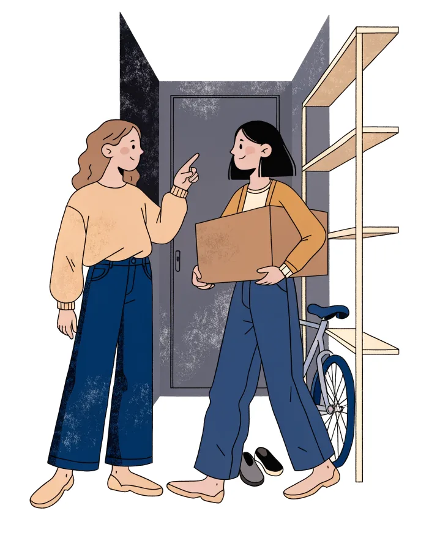
독일 생활에 익숙해지면 집에서 해결할 일이 생겨요. 난방이 고장 나면 집주인에게 알려야 하고, 같이 사는 사람과는 청소와 정리 규칙을 정해야 해요. 그럴 때는 무엇이 어디에 있는지, 어디에 둘지를 정확히 말해요.
문법 Wechselpräpositionen (Wohin? + Akkusativ, Wo? + Dativ), stellen – stehen, legen – liegen, hängen
과제대학WG 청소 계획을 정하고 규칙 쓰기
과제직장집주인에게 고장을 알리고 수리 날짜 잡기
이 과를 마치면 집의 고장을 알리고 수리 날짜를 잡고, 이웃과 이야기하고, 물건을 어디에 둘지 말할 수 있어요.
이 과에서 쓸 말이에요. 눌러서 먼저 들어 보세요.
배우기 전에 먼저 해 보세요. 틀려도 괜찮아요.
Wohin?은 무엇을 묻는 말일까요?
Wo?는 있는 자리, Wohin?은 가는 방향을 물어요.
Die Waschmaschine ist kaputt.는 무슨 뜻일까요?
kaputt는 고장 난 것을 말해요.
10월의 토요일 오전, WG 복도예요. 9월에 새 룸메이트 Felix가 들어와서 이제 셋이 살아요. Lena와 Jiu가 정리와 청소 이야기를 해요.
들으면서 찾아보세요. 이번 주에 욕실은 누가 청소하나요?
월요일 아침이에요. Dohyun의 가족이 사는 집에 난방이 안 돼요. Dohyun이 집주인 Frau Krause에게 전화해요.
들으면서 찾아보세요. 수리 기사는 언제 오나요?
저녁, Sora가 사는 건물의 계단이에요. 옆집에 사는 Herr Wolf가 Sora에게 말을 걸어요.
들으면서 찾아보세요. Sora는 Herr Wolf에게서 무엇을 빌리나요?
세 대화를 듣고 답하세요.
누구의 자전거가 복도에 서 있나요?
거울은 어디에 거나요?
Jiu macht diese Woche die Küche sauber.
Jiu는 욕실을 청소하고 Lena가 부엌을 치워요.
Dohyun의 집에서 무엇이 안 되나요?
수리 기사는 언제 오나요?
Dohyun muss die Reparatur zahlen.
집주인이 낸다고 했어요.
Sora는 Herr Wolf에게서 무엇을 빌리나요?
Am Samstag hat Sora Gäste.
낱말 52개예요. 낱말이나 예문 앞의 단추를 누르면 소리가 나요. 명사는 der, die, das를 색으로 구분했어요.
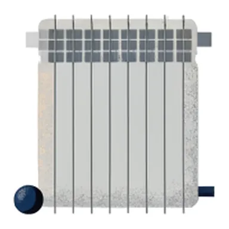
die Heizung, die Heizungen 난방, 난방기
Die Heizung ist kalt.난방기가 차가워요.
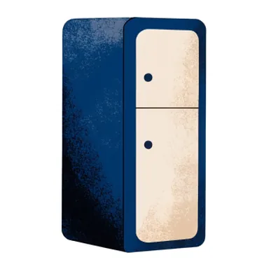
der Kühlschrank, die Kühlschränke 냉장고
Die Milch steht im Kühlschrank.우유는 냉장고에 있어요.
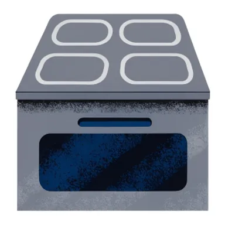
der Herd, die Herde 가스레인지, 전기레인지
Der Herd ist neu.레인지는 새것이에요.
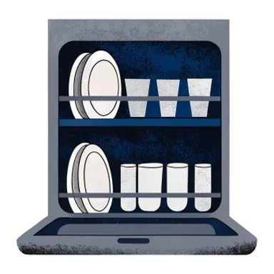
die Spülmaschine, die Spülmaschinen 식기세척기
Die Spülmaschine ist kaputt.식기세척기가 고장 났어요.
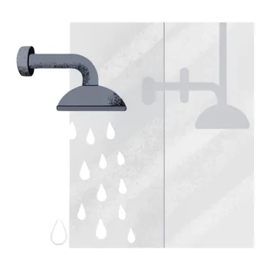
die Dusche, die Duschen 샤워기, 샤워실
Die Dusche ist im Bad.샤워기는 욕실에 있어요.
die Toilette, die Toiletten 화장실, 변기
Wo ist die Toilette?화장실이 어디예요?
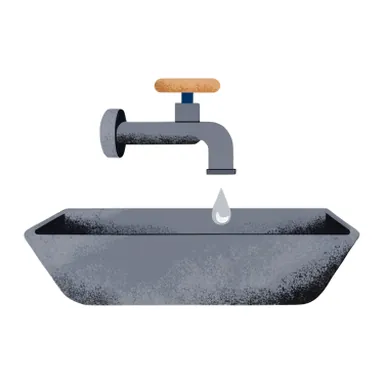
der Wasserhahn, die Wasserhähne 수도꼭지
Der Wasserhahn im Bad ist neu.욕실 수도꼭지는 새것이에요.
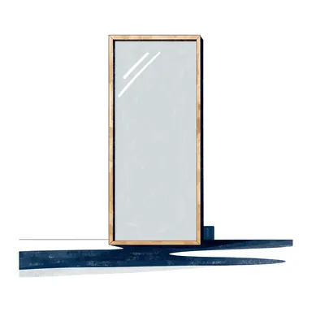
der Spiegel, die Spiegel 거울
Der Spiegel hängt im Flur.거울은 복도에 걸려 있어요.
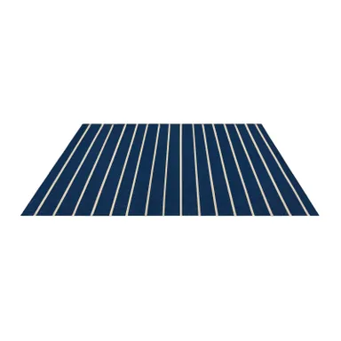
der Teppich, die Teppiche 카펫, 러그
Der Teppich liegt im Wohnzimmer.카펫은 거실에 깔려 있어요.
der Boden, die Böden 바닥
Die Tasche steht auf dem Boden.가방은 바닥에 있어요.
die Decke, die Decken 천장
Die Lampe hängt an der Decke.전등은 천장에 달려 있어요.
das Licht, die Lichter 불, 전등
Das Licht im Flur ist kaputt.복도 전등이 고장 났어요.
der Stock, die Stockwerke 층
Wir wohnen im zweiten Stock.우리는 3층에 살아요.
das Treppenhaus, die Treppenhäuser 계단, 계단이 있는 공간
Im Treppenhaus ist es dunkel.계단은 어두워요.
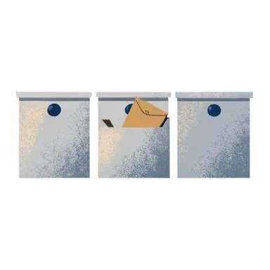
der Briefkasten, die Briefkästen 우편함
Der Briefkasten ist unten am Eingang.우편함은 아래 입구에 있어요.
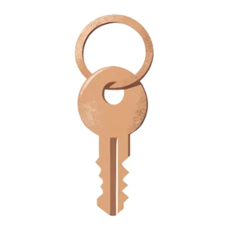
der Schlüssel, die Schlüssel 열쇠
Wo ist mein Schlüssel?제 열쇠가 어디 있어요?
das Problem, die Probleme 문제
Wir haben ein Problem.문제가 하나 있어요.
kaputt 고장 난, 망가진
Die Waschmaschine ist kaputt.세탁기가 고장 났어요.
funktionieren (hat funktioniert) 작동하다
Die Heizung funktioniert nicht.난방이 안 돼요.
tropfen (hat getropft) (물이) 똑똑 떨어지다
Der Wasserhahn tropft.수도꼭지에서 물이 떨어져요.
die Reparatur, die Reparaturen 수리
Die Reparatur zahlt die Vermieterin.수리비는 집주인이 내요.
reparieren (hat repariert) 고치다
Der Handwerker repariert die Heizung.수리 기사가 난방기를 고쳐요.
der Handwerker, die Handwerker 수리 기사, 기술자
Der Handwerker kommt morgen.수리 기사는 내일 와요.
der Hausmeister, die Hausmeister 건물 관리인
Der Hausmeister hat einen Schlüssel.관리인이 열쇠를 하나 가지고 있어요.
Bescheid sagen 알려 주다
Sag mir bitte Bescheid!저한테 알려 주세요!
Was ist los? 무슨 일이에요?
Was ist denn los?무슨 일이에요?
In Ordnung. 알겠어요, 괜찮아요.
Ist alles in Ordnung?다 괜찮아요?
sofort 바로, 즉시
Ich komme sofort.바로 갈게요.
gleich 금방, 곧
Ich fange gleich an.금방 시작할게요.
zwischen ~ 사이에
Er kommt zwischen acht und zehn Uhr.그 사람은 8시에서 10시 사이에 와요.
Sehr geehrte Frau … (격식 있는 편지의 첫인사) … 님께
Sehr geehrte Frau Krause, wir haben ein Problem.Frau Krause께, 문제가 하나 있습니다.
Mit freundlichen Grüßen (격식 있는 편지의 맺음말)
Mit freundlichen Grüßen, Dohyun ParkDohyun Park 올림
stellen (hat gestellt) (세워서) 놓다
Ich stelle das Regal an die Wand.선반을 벽 쪽에 놓아요.
legen (hat gelegt) (눕혀서) 놓다
Ich lege das Buch auf den Tisch.책을 탁자 위에 놓아요.
der Putzplan, die Putzpläne 청소 계획표
Der Putzplan hängt am Kühlschrank.청소 계획표는 냉장고에 붙어 있어요.
die Regel, die Regeln 규칙
Wir haben drei Regeln.우리에게는 규칙이 세 가지 있어요.
die Hausordnung 건물 생활 규칙
Die Hausordnung hängt im Treppenhaus.생활 규칙은 계단에 붙어 있어요.
der Müll 쓰레기
Wer bringt den Müll raus?쓰레기는 누가 내다 버려요?
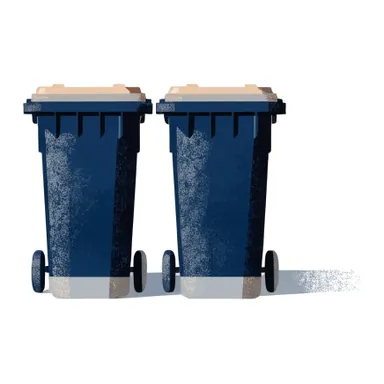
die Mülltonne, die Mülltonnen (건물 밖의 큰) 쓰레기통
Die Mülltonnen stehen im Hof.쓰레기통은 마당에 있어요.
der Hof, die Höfe 마당, 안뜰
Die Kinder spielen im Hof.아이들은 마당에서 놀아요.
rausbringen (hat rausgebracht) 밖으로 내가다
Felix bringt den Müll raus.Felix가 쓰레기를 내다 버려요.
sauber 깨끗한
Das Bad ist sauber.욕실은 깨끗해요.
schmutzig 더러운
Der Boden ist schmutzig.바닥이 더러워요.
sauber machen (hat sauber gemacht) 치우다, 청소하다
Ich mache die Küche sauber.저는 부엌을 치워요.
das Paket, die Pakete 택배, 소포
Ich habe ein Paket für Sie.택배가 하나 와 있어요.
abgeben (du gibst ab, hat abgegeben) 맡기다, 내다
Der Bote hat das Paket bei mir abgegeben.배달하는 분이 택배를 저한테 맡겼어요.
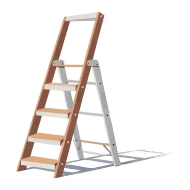
die Leiter, die Leitern 사다리
Die Leiter steht im Keller.사다리는 지하실에 있어요.
leihen (hat geliehen) 빌려주다, 빌리다
Kannst du mir die Leiter leihen?사다리를 빌려줄 수 있어요?
zurückbringen (hat zurückgebracht) 돌려주다, 도로 가져가다
Ich bringe die Leiter am Montag zurück.사다리는 월요일에 돌려 드릴게요.
stören (hat gestört) 방해하다
Die Musik stört mich nicht.음악은 저한테 방해가 안 돼요.
leise 조용한, 작은 소리로
Ab zehn Uhr bitte leise!10시부터는 조용히 해 주세요!
schwer 무거운, 어려운
Das Paket ist schwer.택배가 무거워요.
이 과의 낱말로 여덟 문제를 풀어요.
줄을 누르면 소리가 나요. 왼쪽은 물건을 옮기는 동작이고 오른쪽은 그 결과로 물건이 있는 자리예요.
규칙
in, an, auf, neben, über, unter, vor, hinter, zwischen 아홉 개는 두 가지로 쓰여요. 사람이나 물건이 어디로 움직이는지(Wohin?) 말할 때는 뒤에 Akkusativ가 와요. der는 den으로 바뀌고 das와 die는 그대로예요.
| 명사 | Wohin? | 예 |
|---|---|---|
| der | in den | in den Keller |
| das | in das (ins) | ins Regal |
| die | in die | an die Wand |
| 여럿 | in die | in die Zimmer |
주의 in das는 ins, an das는 ans, auf das는 aufs로 줄여 말해요. Ich stelle die Schuhe ins Regal. 방향을 말할 때는 fahren이나 gehen 같은 동사를 빼고 조동사만 쓰기도 해요. Das Fahrrad muss in den Keller.
규칙을 보고 바로 확인해 보세요.
Ich lege das Buch auf … Tisch. 빈칸에 알맞은 말은 무엇인가요?
규칙
같은 전치사라도 묻는 말에 따라 뒤의 모양이 달라요. 있는 자리(Wo?)는 Dativ, 가는 방향(Wohin?)은 Akkusativ예요. A1.2에서 배운 im, am, auf dem은 자리를 말하는 Dativ였어요.
| 명사 | Wo? | Wohin? |
|---|---|---|
| der Keller | im Keller | in den Keller |
| das Regal | im Regal | ins Regal |
| die Wand | an der Wand | an die Wand |
| die Zimmer | in den Zimmern | in die Zimmer |
주의 움직임이 있어도 한 곳 안에서 움직이면 Wo?예요. Die Kinder spielen im Hof. 아이들은 마당 안에서 놀아요. 마당으로 들어갈 때는 Wohin?이에요. Die Kinder gehen in den Hof.
규칙을 보고 바로 확인해 보세요.
Die Leiter steht … Keller. 빈칸에 알맞은 말은 무엇인가요?
규칙
독일어는 놓는 동작과 놓여 있는 상태를 다른 동사로 말해요. 세워 놓으면 stellen, 눕혀 놓으면 legen, 걸면 hängen이에요. 그 결과로 서 있으면 stehen, 누워 있으면 liegen, 걸려 있으면 hängen이에요. 동작을 말하는 동사는 Wohin?(Akkusativ)과, 상태를 말하는 동사는 Wo?(Dativ)와 써요.
| 동사 | 뜻 | Perfekt |
|---|---|---|
| stellen | 세워 놓다 | hat gestellt |
| stehen | 서 있다 | hat gestanden |
| legen | 눕혀 놓다 | hat gelegt |
| liegen | 누워 있다 | hat gelegen |
| hängen | 걸다 | hat gehängt |
| hängen | 걸려 있다 | hat gehangen |
주의 병, 선반, 자전거처럼 서 있는 물건에는 stellen과 stehen을, 책, 열쇠, 카펫처럼 누워 있는 물건에는 legen과 liegen을 써요. 물건을 다시 가리킬 때 der는 ihn, das는 es, die는 sie예요. Wo ist der Putzplan? Ich hänge ihn an die Tür.
규칙을 보고 바로 확인해 보세요.
열쇠를 탁자 위에 놓을 때 쓰는 동사는 무엇인가요?
듣고 알맞은 것을 고르세요.
신발을 어디에 두라고 하나요?
Stell die Schuhe bitte ins Regal.
무엇이 문제인가요?
Der Wasserhahn im Bad tropft seit gestern.
수리 기사는 언제 오나요?
Der Handwerker kommt am Donnerstag zwischen zwei und vier Uhr.
사다리는 어디에 있나요?
Die Leiter steht im Keller, hinter den Fahrrädern.
건물 관리인이 자동 응답기에 남긴 말이에요. 듣고 알맞은 것을 고르세요.
Eine Nachricht vom Hausmeister
Hausmeister Guten Tag, hier ist Krüger, der Hausmeister.
Hausmeister Am Mittwoch reparieren wir die Heizung im Haus. Der Handwerker kommt um neun Uhr.
Hausmeister Von neun bis zwölf Uhr gibt es kein Wasser, und die Heizung bleibt kalt.
Hausmeister Bitte stellen Sie keine Fahrräder in den Flur. Der Handwerker braucht Platz.
Hausmeister Haben Sie Fragen? Dann rufen Sie mich bitte an. Vielen Dank!
수리는 무슨 요일에 하나요?
몇 시부터 몇 시까지 물이 안 나오나요?
Was soll man nicht in den Flur stellen?
계단에 붙은 안내문이에요. 읽고, 맞으면 richtig, 틀리면 falsch를 고르세요.
Hausordnung
Liebe Mieterinnen und Mieter,
hier sind unsere Regeln:
1. Von 22 bis 6 Uhr und am Sonntag ist Ruhezeit. Bitte hören Sie dann nur leise Musik.
2. Fahrräder stehen im Keller, nicht im Treppenhaus.
3. Der Müll kommt in die Mülltonnen im Hof. Bitte stellen Sie keinen Müll vor die Tür.
4. Im Keller stehen zwei Waschmaschinen. Sie können dort von 7 bis 21 Uhr waschen.
Haben Sie ein Problem in der Wohnung? Dann rufen Sie bitte den Hausmeister an: 069 90009-214.
Ihre Hausverwaltung
Am Sonntag darf man laut Musik hören.
일요일은 조용히 하는 날이에요.
Die Fahrräder stehen im Keller.
Man soll den Müll vor die Tür stellen.
쓰레기는 마당의 쓰레기통에 버려요.
Um 22 Uhr kann man noch waschen.
세탁은 21시까지 할 수 있어요.
Bei Problemen ruft man den Hausmeister an.
Wohin? 알맞은 말을 고르세요.
Ich stelle das Regal an Wand.
Lena hängt den Putzplan an Kühlschrank.
Stell die Schuhe bitte Regal.
Das Fahrrad muss in Keller.
Wir legen den Teppich in Wohnzimmer.
Minho hängt die Lampe an Decke.
Wo? 아니면 Wohin? 알맞은 말을 고르세요.
Die Leiter steht Keller.
Ich bringe die Leiter Keller.
Der Spiegel hängt Wand.
Jiu hängt das Bild Wand.
Die Mülltonnen stehen Hof.
Felix bringt den Müll Hof.
Der Schlüssel liegt Tisch.
알맞은 동사를 고르세요.
Ich die Flasche in den Kühlschrank.
병을 냉장고에 넣어요.
Die Flasche im Kühlschrank.
병은 냉장고에 있어요.
Sora den Schlüssel auf den Tisch.
Sora가 열쇠를 탁자 위에 놓아요.
Der Teppich im Flur.
카펫은 복도에 깔려 있어요.
Wir das Bild über das Sofa.
그림을 소파 위에 걸어요.
Wo der Putzplan?
청소 계획표는 어디에 걸려 있어요?
낱말을 순서대로 눌러 문장을 만드세요.
선반을 벽 쪽에 놓아요.
거울은 신발장 위에 걸려 있어요.
난방이 토요일부터 안 돼요.
신발을 어디에 둘까요?
수리 기사는 내일 8시에서 10시 사이에 와요.
물건과 그것이 있는 곳을 짝지으세요.
빈칸에 알맞은 낱말을 쓰세요.
Die Heizung ist . Sie funktioniert nicht.
난방기가 고장 났어요. 작동하지 않아요.
Der repariert den Wasserhahn.
수리 기사가 수도꼭지를 고쳐요.
Wir wohnen im zweiten .
우리는 3층에 살아요.
Felix bringt den raus.
Felix가 쓰레기를 내다 버려요.
듣고 그대로 써 보세요.
Die Heizung funktioniert nicht. 난방이 안 돼요.
Stell das Regal bitte an die Wand. 선반을 벽 쪽에 놓아 주세요.
Die Leiter steht im Keller. 사다리는 지하실에 있어요.
Wir haben ein Problem. 문제가 하나 있어요.
Die Heizung funktioniert nicht. 난방이 안 돼요.
Der Wasserhahn tropft. 수도꼭지에서 물이 떨어져요.
Das Licht im Flur ist kaputt. 복도 전등이 고장 났어요.
Wann kann der Handwerker kommen? 수리 기사는 언제 올 수 있어요?
Ich bin am Vormittag zu Hause. 저는 오전에 집에 있어요.
Zwischen acht und zehn Uhr passt es gut. 8시에서 10시 사이가 좋아요.
Muss ich die Reparatur zahlen? 수리비는 제가 내야 하나요?
Wohin stellen wir das Regal? 선반을 어디에 놓을까요?
Stell es bitte neben die Tür. 문 옆에 놓아 주세요.
Das Fahrrad muss in den Keller. 자전거는 지하실로 가야 해요.
Der Spiegel hängt jetzt im Flur. 거울은 이제 복도에 걸려 있어요.
Wer putzt diese Woche das Bad? 이번 주에 욕실은 누가 청소해요?
Ich mache die Küche sauber. 저는 부엌을 치울게요.
Du bringst den Müll raus. 쓰레기는 당신이 내다 버려요.
Ist das in Ordnung? 그렇게 하면 괜찮아요?
Ich habe ein Paket für Sie. 택배가 하나 와 있어요.
Das ist sehr nett von Ihnen. 정말 친절하세요.
Können Sie mir eine Leiter leihen? 사다리를 빌려주실 수 있어요?
Am Samstag haben wir Gäste. Es ist vielleicht ein bisschen laut. 토요일에 손님이 와요. 조금 시끄러울지도 몰라요.
과제 고르기
역할 대화와 말하기, 쓰기 과제는 대학 생활과 직장 생활 두 가지예요. 하나를 고르면 다음 과에서도 그쪽 과제가 나와요. 언제든 바꿀 수 있어요.
대화 A에서 역할을 하나 고르세요. 상대의 말은 음성으로 나오고, 내 차례에는 직접 말해요.
대화 B에서 역할을 하나 고르세요. 상대의 말은 음성으로 나오고, 내 차례에는 직접 말해요.
내 방을 떠올리고 칸을 채우세요. 완성된 문장을 소리 내어 읽어 보세요.
In meinem Zimmer steht ein Schreibtisch vor dem Fenster.
An der Wand hängt ein Bild von meiner Familie.
Ich möchte noch eine Lampe neben das Bett stellen.
WG에 새 사람이 들어와서 이제 셋이 살아요. 청소와 정리를 어떻게 나눌지 Lena와 정하려고 해요.
이번 주에는 내가 욕실을 청소해요. Lena는 부엌을 치우고, Felix는 쓰레기를 내다 버려요. 계획표는 냉장고에 붙여요. 신발은 신발장에 넣고, 자전거는 지하실에 둬요.
같이 사는 Lena가 청소와 정리에 대해 물어요. 쪽지를 보고 답하세요. 질문을 듣고 소리 내어 답한 뒤 예시 답과 비교해 보세요.
Wer putzt diese Woche das Bad? 이번 주에 욕실은 누가 청소해요?
Ich putze diese Woche das Bad.
Und was mache ich? 그럼 저는 뭘 해요?
Du machst die Küche sauber, und Felix bringt den Müll raus.
Wohin hängen wir den Putzplan? 계획표는 어디에 붙일까요?
Wir hängen ihn an den Kühlschrank.
Wohin stellen wir die Schuhe? 신발은 어디에 둘까요?
Wir stellen sie ins Schuhregal.
Und das Fahrrad von Felix? Felix의 자전거는요?
Das Fahrrad muss in den Keller.
Unsere WG-Regeln
WG 사람들이 지킬 규칙을 써 보세요. 다섯 문장이면 충분해요.
Unsere Regeln: Jede Woche putzt eine Person das Bad, und eine Person macht die Küche sauber. Der Putzplan hängt am Kühlschrank. Wir bringen den Müll am Montag und am Donnerstag in den Hof. Die Schuhe stehen im Regal, und die Fahrräder stehen im Keller. Ab 22 Uhr hören wir nur leise Musik.
다 쓴 뒤에 확인해 보세요.
내가 사는 집의 부엌에 문제가 있어요. 집주인 Frau Krause에게 전화해요.
식기세척기가 어제부터 안 돼요. 부엌 전등도 고장 났어요. 나는 5시까지 일하고, 금요일 오후에는 집에 있어요. 수리 기사가 금요일 2시에서 4시 사이에 오면 좋아요.
집주인 Frau Krause와 통화해요. 쪽지를 보고 답하세요. 질문을 듣고 소리 내어 답한 뒤 예시 답과 비교해 보세요.
Krause, guten Tag. Was kann ich für Sie tun? Krause입니다, 안녕하세요. 무엇을 도와드릴까요?
Guten Tag, Frau Krause. Wir haben ein Problem in der Küche.
Was ist denn los? 무슨 일이에요?
Die Spülmaschine funktioniert seit gestern nicht.
Ist das alles? 그게 다예요?
Nein, das Licht in der Küche ist auch kaputt.
Ich rufe den Handwerker an. Wann sind Sie zu Hause? 수리 기사에게 전화할게요. 언제 집에 계세요?
Ich arbeite bis fünf Uhr. Aber am Freitagnachmittag bin ich zu Hause.
Kann er am Freitag zwischen zwei und vier Uhr kommen? 금요일 2시에서 4시 사이에 가도 될까요?
Ja, das passt gut. Vielen Dank!
Eine E-Mail an die Vermieterin
통화한 내용을 집주인에게 메일로도 남겨 보세요. 다섯 문장이면 충분해요.
Sehr geehrte Frau Krause, wir haben ein Problem in der Küche. Die Spülmaschine funktioniert seit gestern nicht, und das Licht ist auch kaputt. Können Sie bitte einen Handwerker schicken? Ich bin am Freitag ab 14 Uhr zu Hause. Vielen Dank für Ihre Hilfe. Mit freundlichen Grüßen, Minji Choi
다 쓴 뒤에 확인해 보세요.
Ich kann ein Problem in der Wohnung melden und einen Termin für die Reparatur machen.집의 고장을 알리고 수리 날짜를 잡을 수 있어요.
Ich kann sagen, wohin ich etwas stelle, lege oder hänge.물건을 어디에 놓고 걸지 말할 수 있어요.
Ich kann mit Nachbarn sprechen und etwas leihen.이웃과 이야기하고 물건을 빌릴 수 있어요.
Ich kann Regeln für das Zusammenwohnen verstehen und schreiben.같이 사는 규칙을 이해하고 쓸 수 있어요.